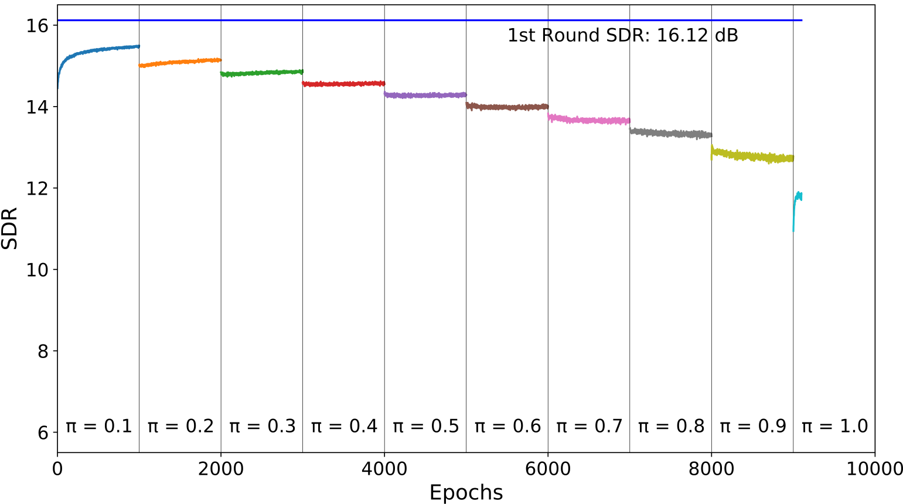

Incremental Binarization On Recurrent Neural Networks For Single-Channel Source Separation
Abstract
This paper proposes a Bitwise Gated Recurrent Unit (BGRU) network for the single-channel source separation task. Recurrent Neural Networks (RNN) require several sets of weights within its cells, which significantly increases the computational cost compared to the fully-connected networks. To mitigate this increased computation, we focus on the GRU cells and quantize the feedforward procedure with binarized values and bitwise operations. The BGRU network is trained in two stages. The real-valued weights are pretrained and transferred to the bitwise network, which are then incrementally binarized to minimize the potential loss that can occur from a sudden introduction of quantization. As the proposed binarization technique turns only a few randomly chosen parameters into their binary versions, it gives the network training procedure a chance to gently adapt to the partly quantized version of the network. It eventually achieves the full binarization by incrementally increasing the amount of binarization over the iterations. Our experiments show that the proposed BGRU method produces source separation results greater than that of a real-valued fully connected network, with 11-12 dB mean Signal-to-Distortion Ratio (SDR). A fully binarized BGRU still outperforms a Bitwise Neural Network (BNN) by 1-2 dB even with less number of layers.
|  |
| Fig 1. Performance in SDR on incremental levels of quantization π. |